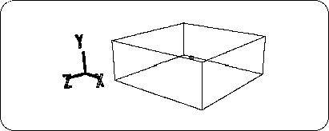
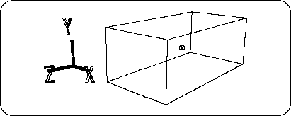

Return to previous page | Return to menu | Go to next page
First of all, there are few cars with a height of 4m, so we set it to 1.5m.
[Scale] Click anywhere in the triangle of X, Y, Z in the icon. Opens a window where you can enter values directly. 1.5 ÷ 4 = 0.375 times, so
X: 1, Y: 0.375, Z: 1
And click “Set” (Figure 3-2).

Here, set the new size as the reference value.
[Effect] → [Freeze] → [Scaling]
Choose. The ScaleY value should have changed from 0.3750 to 1.000.
Next, there is no car with a width of 4m.
Similar to when the height is reduced, click the triangle in the [Scale] icon to enter the numeric input mode.
2 ÷ 4 = 0.5 times. Since the width is in the X direction,
X: 0.5, Y: 1, Z: 1
And click “Set” (Figure 3-3).

I want to use the size here as a reference.
[Effect] → [Freeze] → [Scaling]
Choose. Check that the value of ScaleX has changed from 0.5000 to 1.000.